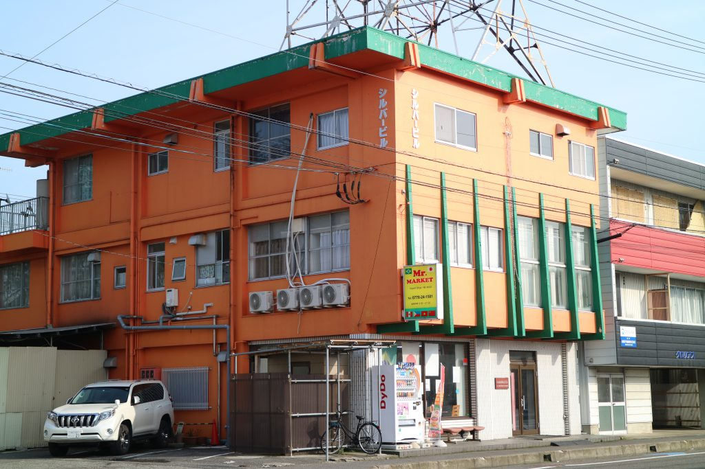
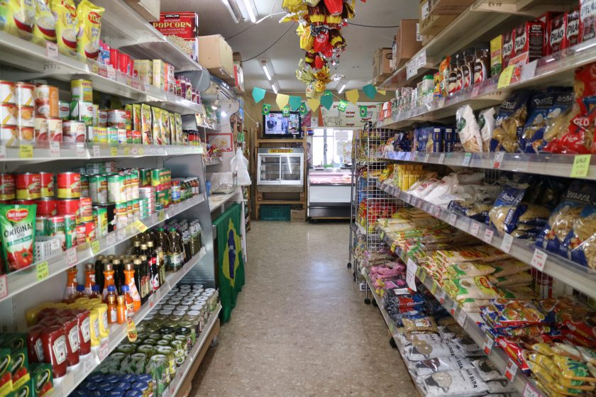

い ： 一緒に素敵な街にしよう ブラジルの方よろしくね
一言でいうと？
越前市にはブラジルの人がたくさん住んでいる！
越前市にはブラジルの方が多いというのを知っていましたか？
越前かるたの「3つの”ぎゅっ”」の2番目、「人と人をつなぐ握手(あくしゅ)の”ぎゅっ”」も、越前市の人とブラジルの人をつなぎたいという思いからきています。
どのくらい多いの？
越前市に住む外国人の7割がブラジル人！
平成30年10月では越前市に住む外国人の人数は4262人でしたが、その中でも3045人がブラジルの方でした！
これだけたくさんのブラジル人が住んでいるのは全国でもトップクラスです！
▼越前市に住む外国人についてのグラフ
(青い色がブラジル人です)
越前市, 2019, 『越前市多文化共生推進プラン』, p. 15 より引用
なぜそんなに多いの？
越前市で働いている人が多いから！
越前市には大きな工場がいくつかあり、そこで働く人とその家族が多いからです。
ブラジルのお店？
Mr.MARKET(ミスターマーケット)


ブラジルの方が多いことで、ブラジルのものを取り扱うお店も増えてきています。「Mr.MARKET(ミスターマーケット)」ではブラジルやフィリピンなどの食材や日用品を売っています。
住所 ≫ 越前市日野美1-3-20
西部開発第2ビル1階
営業時間 ≫ 8：30～21：30
定休日 ≫ 年中無休
電話 ≫ 0778-24-1581
街を歩いていても何度がすれ違いますし、アルバイト先でもよくお見掛けしますね。最近は外国の方向けの体験事業が増えてきて、交流が多くなりつつあるのがうれしいです。この越前かるたも、読み札にふりがなをふったり、サイトにポルトガル語翻訳をつけたりと、ブラジルをはじめ外国の子供たちにも楽しんでもらいたいと工夫を凝らしました！